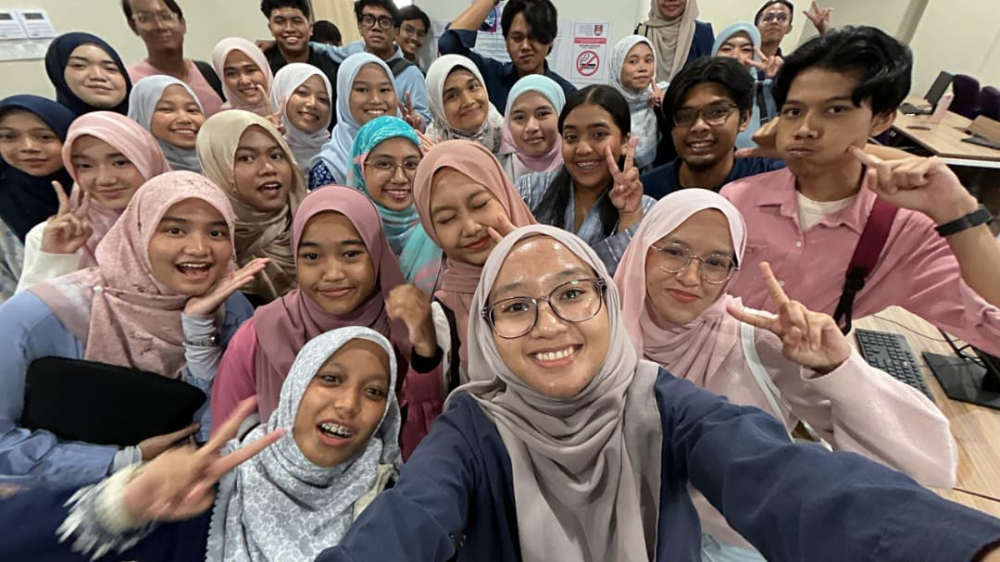

Leadership & committees
Internal Relations & Mobility Exco · Actuarial Science Club
Role summary
- Serve as an Executive Committee member responsible for internal relations and mobility initiatives within the Actuarial Science Club.
- Strengthen communication and engagement among members while supporting mobility, networking and collaborative opportunities.
- Assist with programmes involving students, external organisations and academic communities.
- Develop stakeholder communication, event coordination, teamwork, relationship management and programme-planning skills.
Moments


